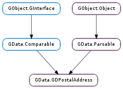

| static | new(relation_type, label, is_primary) |
| get_address() | |
| get_agent() | |
| get_city() | |
| get_country() | |
| get_country_code() | |
| get_house_name() | |
| get_label() | |
| get_mail_class() | |
| get_neighborhood() | |
| get_po_box() | |
| get_postcode() | |
| get_region() | |
| get_relation_type() | |
| get_street() | |
| get_subregion() | |
| get_usage() | |
| is_primary() | |
| set_address(address) | |
| set_agent(agent) | |
| set_city(city) | |
| set_country(country, country_code) | |
| set_house_name(house_name) | |
| set_is_primary(is_primary) | |
| set_label(label) | |
| set_mail_class(mail_class) | |
| set_neighborhood(neighborhood) | |
| set_po_box(po_box) | |
| set_postcode(postcode) | |
| set_region(region) | |
| set_relation_type(relation_type) | |
| set_street(street) | |
| set_subregion(subregion) | |
| set_usage(usage) |
| Name | Type | Flags | Description |
|---|---|---|---|
| address | str | r/w | The postal address itself. |
| agent | str | r/w | The agent who actually receives the mail. |
| city | str | r/w | Can be city, village, town, borough, etc. |
| country | str | r | The name of the country. |
| country-code | str | r | The ISO 3166-1 alpha-2 country code for the country. |
| house-name | str | r/w | Used in places where houses or buildings have names (and not numbers). |
| is-primary | bool | r/w | Indicates which postal address out of a group is primary. |
| label | str | r/w | A simple string value used to name this postal address. |
| mail-class | str | r/w | Classes of mail accepted at this address. |
| neighborhood | str | r/w | This is used to disambiguate a street address. |
| po-box | str | r/w | Covers actual P.O. boxes, drawers, locked bags, etc. |
| postcode | str | r/w | Postal code. |
| region | str | r/w | A state, province, county, Land, departement, etc. |
| relation-type | str | r/w | A programmatic value that identifies the type of postal address. |
| street | str | r/w | Can be street, avenue, road, etc. |
| subregion | str | r/w | Handles administrative districts such as U.S. or U.K. counties. |
| usage | str | r/w | The context in which this addess can be used. |
None
| Name | Type | Access |
|---|---|---|
| parent | GData.Parsable | r |
Bases: GData.Parsable, GData.Comparable
All the fields in the GData.GDPostalAddress structure are private and should never be accessed directly.
| Parameters: | |
|---|---|
| Returns: | a new GData.GDPostalAddress, or None ; unref with GObject.Object.unref () |
| Return type: |
Creates a new GData.GDPostalAddress. More information is available in the GLib.Data specification.
| Returns: | the postal address itself, or None |
|---|---|
| Return type: | str |
Gets the GData.GDPostalAddress :address property.
| Returns: | the postal address’ agent, or None |
|---|---|
| Return type: | str |
Gets the GData.GDPostalAddress :agent property.
| Returns: | the postal address’ city, or None |
|---|---|
| Return type: | str |
Gets the GData.GDPostalAddress :city property.
| Returns: | the postal address’ country, or None |
|---|---|
| Return type: | str |
Gets the GData.GDPostalAddress :country property.
| Returns: | the postal address’ ISO 3166-1 alpha-2 country code, or None |
|---|---|
| Return type: | str |
Gets the GData.GDPostalAddress :country-code property.
| Returns: | the postal address’ house name, or None |
|---|---|
| Return type: | str |
Gets the GData.GDPostalAddress :house-name property.
| Returns: | the postal address’ label, or None |
|---|---|
| Return type: | str |
Gets the GData.GDPostalAddress :label property.
| Returns: | the postal address’ mail class, or None |
|---|---|
| Return type: | str |
Gets the GData.GDPostalAddress :mail-class property.
| Returns: | the postal address’ neighborhood, or None |
|---|---|
| Return type: | str |
Gets the GData.GDPostalAddress :neighborhood property.
| Returns: | the postal address’ P.O. box, or None |
|---|---|
| Return type: | str |
Gets the GData.GDPostalAddress :po-box property.
| Returns: | the postal address’ postcode, or None |
|---|---|
| Return type: | str |
Gets the GData.GDPostalAddress :postcode property.
| Returns: | the postal address’ region, or None |
|---|---|
| Return type: | str |
Gets the GData.GDPostalAddress :region property.
| Returns: | the postal address’ relation type, or None |
|---|---|
| Return type: | str |
Gets the GData.GDPostalAddress :relation-type property.
| Returns: | the postal address’ street, or None |
|---|---|
| Return type: | str |
Gets the GData.GDPostalAddress :street property.
| Returns: | the postal address’ subregion, or None |
|---|---|
| Return type: | str |
Gets the GData.GDPostalAddress :subregion property.
| Returns: | the postal address’ usage, or None |
|---|---|
| Return type: | str |
Gets the GData.GDPostalAddress :usage property.
| Returns: | True if this is the primary postal address, False otherwise |
|---|---|
| Return type: | bool |
Gets the GData.GDPostalAddress :is-primary property.
| Parameters: | address (str or None) – the new postal address, or None |
|---|
Sets the GData.GDPostalAddress :address property to address.
| Parameters: | agent (str or None) – the new agent for the postal address, or None |
|---|
Sets the GData.GDPostalAddress :agent property to agent.
Set agent to None to unset the property in the postal address.
| Parameters: | city (str or None) – the new city for the postal address, or None |
|---|
Sets the GData.GDPostalAddress :city property to city.
Set city to None to unset the property in the postal address.
| Parameters: |
|---|
Sets the GData.GDPostalAddress :country property to country, and GData.GDPostalAddress :country-code to country_code.
Set country or country_code to None to unset the relevant property in the postal address. If a country_code is provided, a country must also be provided.
| Parameters: | house_name (str or None) – the new house name for the postal address, or None |
|---|
Sets the GData.GDPostalAddress :house-name property to house_name.
Set house_name to None to unset the property in the postal address.
| Parameters: | is_primary (bool) – True if this is the primary postal address, False otherwise |
|---|
Sets the GData.GDPostalAddress :is-primary property to is_primary.
| Parameters: | label (str or None) – the new label for the postal address, or None |
|---|
Sets the GData.GDPostalAddress :label property to label.
Set label to None to unset the property in the postal address.
| Parameters: | mail_class (str or None) – the new mail class for the postal address, or None |
|---|
Sets the GData.GDPostalAddress :mail-class property to mail_class.
Set mail_class to None to unset the property in the postal address.
| Parameters: | neighborhood (str or None) – the new neighborhood for the postal address, or None |
|---|
Sets the GData.GDPostalAddress :neighborhood property to neighborhood.
Set neighborhood to None to unset the property in the postal address.
| Parameters: | po_box (str or None) – the new P.O. box for the postal address, or None |
|---|
Sets the GData.GDPostalAddress :po-box property to po_box.
Set po_box to None to unset the property in the postal address.
| Parameters: | postcode (str or None) – the new postcode for the postal address, or None |
|---|
Sets the GData.GDPostalAddress :postcode property to postcode.
Set postcode to None to unset the property in the postal address.
| Parameters: | region (str or None) – the new region for the postal address, or None |
|---|
Sets the GData.GDPostalAddress :region property to region.
Set region to None to unset the property in the postal address.
| Parameters: | relation_type (str or None) – the new relation type for the postal_address, or None |
|---|
Sets the GData.GDPostalAddress :relation-type property to relation_type.
Set relation_type to None to unset the property in the postal address.
| Parameters: | street (str or None) – the new street for the postal address, or None |
|---|
Sets the GData.GDPostalAddress :street property to street.
Set street to None to unset the property in the postal address.
| Parameters: | subregion (str or None) – the new subregion for the postal address, or None |
|---|
Sets the GData.GDPostalAddress :subregion property to subregion.
Set subregion to None to unset the property in the postal address.